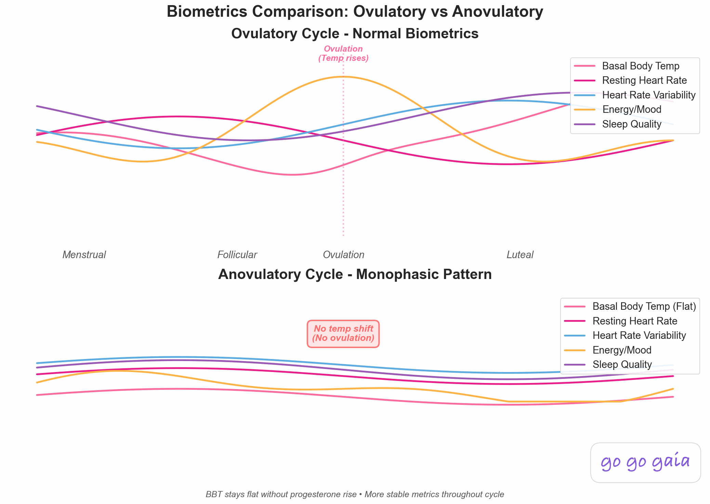

Which Wearable Is Best for Tracking a Cycle With PCOS or Irregular Periods?
Apple Watch, Oura, Fitbit, Galaxy Watch, Garmin and Ultrahuman each handle an irregular cycle differently. This guide covers what temperature sensing can and can't do, what each maker says about irregular cycles, and how to choose.
Full transparency: This guide is published by Holland Neurotech Inc., the company behind Veya. We've worked to describe every device fairly, and each device detail comes from the maker's own help or product pages.
Quick answer
No single wearable suits every irregular cycle. Temperature-based estimates need a visible shift and a few cycles of data, so they can go quiet when cycles vary a lot. Choose a device that still logs your bleeding and symptoms when estimates pause, and check how it handles your cycle before you buy.
Medical Disclaimer
This article is for educational and informational purposes only and does not constitute medical advice. A wearable can't diagnose PCOS or explain why your cycles are irregular. If your periods are irregular, absent, or changing, talk with your doctor or another healthcare provider. Always consult a qualified professional before making health decisions.

Why are irregular cycles harder for wearables to follow?
Most wearable cycle features work the same way. The device measures your temperature overnight, looks for a sustained rise that often follows ovulation, and uses that rise to place the phases of your cycle. Apple describes it as detecting "the biphasic shift," and says estimates only appear once enough nights of data exist.
That approach has a built-in limit. Apple notes that ovulation "may not occur every cycle" and that some cycles may have no detectable shift. Samsung says that "if your cycle is very irregular, skin temperature estimates may not be valid for predicting your cycle," in its skin temperature help page. Oura says long-term factors such as persistent anovulatory cycles can leave your phases or predictions unknown.
None of that means a wearable is useless if your cycles vary. It means the temperature layer is a bonus, and the bleeding and symptom logging underneath it does the steady work. Our posts on period trackers for irregular cycles and tracking a cycle with PCOS or irregular periods go deeper on that part.
What does each wearable actually do for an irregular cycle?
Here's what each maker says on its own pages, in no particular order. We left out claims we couldn't find in an official source.
Apple Watch
Apple Watch Series 8 or later and Apple Watch Ultra models can give retrospective ovulation estimates from wrist temperature. You need Sleep Focus on for at least 4 hours a night for 5 nights, and Apple says it takes about 2 menstrual cycles of wearing the watch to sleep for estimates to appear. The estimate shows up after ovulation, so it looks back rather than predicting ahead.
Separately, Cycle Tracking can flag a pattern of irregular cycles, infrequent periods, prolonged periods or persistent spotting across the last six months of what you've logged. You can also export 12 months of cycle history as a PDF to share with a healthcare provider. Apple says the feature "should not be used to diagnose a health condition." Our explainer on Apple Watch cycle estimates covers the details.
Oura Ring
Oura's Cycle Insights uses overnight temperature, which the ring measures once per minute, to track and predict your cycle. It requires a Gen3 or later ring with an active membership, on iOS or Android. Oura defines a variation of 3 days or less as regular and shows your cycle variability so you can see how much your length changes.
If you're on hormonal contraception, Oura says you can still track bleeding and tag symptoms, but you'll see period predictions only, not phases or a fertile window. Our Oura Cycle Insights explainer walks through the screens.
Google Health with Fitbit and Pixel Watch
Cycle health in the Google Health app works without any device. Period logging is also available on Pixel Watch 3 and higher, Sense 2 and Versa 2. Once you log one period you get predictions, which start from a 28-day cycle and 5-day period until the app learns yours. Ovulation test results you log also feed into the estimates.
Compatible Fitbit and Pixel Watch devices also check skin temperature during sleep and show how it varies from your baseline. Google's temperature page lists the menstrual cycle as one of the things that can move your skin temperature, but it doesn't say the cycle predictions use those readings.
Samsung Galaxy Watch
On Galaxy Watch5 and newer, Samsung Health offers a "predict cycle with skin temperature" setting. It needs at least 4 hours of sleep with the watch on. Samsung also says predictions work from the cycle information you log even without temperature data. Per Samsung's US support page, cycle tracking is only available on Android phones and watches.
Garmin
Garmin Connect's menstrual cycle tracking is built around logging. Garmin says it's for people whose cycles are "regular, irregular, transitioning into menopause" and for people without a period, and you can log symptoms daily either way. A Connect IQ app shows period reminders and logged symptoms on compatible watches. The page doesn't mention temperature tracking.
Ultrahuman Ring AIR
Ultrahuman's free Cycle and Ovulation PowerPlug uses skin temperature, heart rate variability and resting heart rate along with your logged period dates. Ultrahuman says it can import period history from Clue, Apple Health or Health Connect, and that it works "with slightly less accuracy" on irregular cycles than on regular ones. Its accuracy numbers come from Ultrahuman's own study.
The Cycle and Ovulation Pro adds ovulation confirmation and what Ultrahuman calls Cycle Flags. The company says it works reliably for cycles without a textbook 28-day pattern, including for people with PCOS or endometriosis, and also says the Ring AIR version is not FDA-cleared and isn't meant for diagnosis, treatment or contraception.
Natural Cycles, with the NC° Band or another wearable
Natural Cycles is an app, and it takes temperature from the NC° Band, Oura Ring, Apple Watch Series 8 or later, or Garmin, according to its FAQ page. It's cleared as a contraceptive in some regions, so it has its own rules about irregular cycles. Natural Cycles says very irregular cycles can mean more days flagged as "red" as a safety buffer. If Oura is your wearable, only temperature trend data is shared with Natural Cycles, so you log periods in the Natural Cycles app. Our Natural Cycles vs Oura post compares the two.
Worth noting: WHOOP also has cycle features. Its help pages wouldn't open for us, so we haven't described them here. Check WHOOP's current documentation if you're considering it.
How do they compare side by side?
| Device | Overnight temperature | Cycle features named by the maker | What the maker says about irregular cycles |
|---|---|---|---|
| Apple Watch | Wrist, Series 8+, Ultra | Retrospective ovulation estimates, predictions, irregularity notifications | Ovulation may not occur every cycle |
| Oura Ring | Yes, Gen3+ with membership | Cycle Insights, cycle variability | Shows variability. Persistent anovulatory cycles can leave phases unknown |
| Fitbit / Pixel Watch | Skin temperature variation | Cycle health logging and predictions | Helps you notice variations. Temperature page doesn't tie readings to predictions |
| Galaxy Watch | Skin, Watch5+ | Cycle tracking with optional temperature prediction | Very irregular cycles may make temperature estimates invalid |
| Garmin | Not mentioned on the cycle page | Logging, predictions, Connect IQ reminders | Supports regular, irregular and menopause-transition cycles |
| Ultrahuman Ring AIR | Skin, via ring | Free PowerPlug and Pro tier | Slightly less accurate on irregular cycles (free). Pro positioned for non-28-day cycles |
| Natural Cycles | From NC° Band, Oura, Apple Watch, Garmin | App with cycle modes | Very irregular cycles can mean more red days |
How do you choose when your cycles don't follow a pattern?
Start with what you want from the data. Then match it to the device.
- If you want a steady record to show your doctor: favour whichever app makes daily logging easy and lets you export it. Apple's 12-month PDF is one example.
- If you're curious about temperature patterns: expect a few cycles before anything shows, and expect gaps. Apple says about 2 cycles, and Google's skin temperature page says a new baseline needs at least 3 nights.
- If you're on hormonal birth control: read the fine print. Oura limits you to period predictions. Samsung says it can't track ovulation if you take medication that suppresses it. Google says hormonal birth control may make predictions less accurate.
- If you use Android: note that Samsung's cycle tracking is Android-only per its US support page, and check each maker's page for iPhone and Android support before you buy.
- If you don't want a wearable at all: Google Health and Samsung Health predictions work without one. Oura Gen3 and later needs an active membership.
What about wearing one while you travel?
Temperature readings are sensitive to the room you sleep in. Google says significant changes in ambient temperature may affect skin temperature tracking, and Samsung lists room temperature, clothing and illness among the things that change readings. Apple says wrist temperature can be affected by environmental or physiological factors.
So a hotel room with the heating cranked up can nudge a night's reading. Time zones matter too, since Apple and Samsung both need a block of sleep of at least 4 hours for a usable reading. If you travel a lot, you'll get the most from a device that also lets you log by hand, and from an app that doesn't treat a missing night as a problem.
Where does Veya fit if you already wear one?
Veya doesn't replace a wearable. On iPhone, it reads what your wearable writes to Apple Health, including sleep stages, heart rate variability, resting heart rate, respiratory rate, sleeping wrist temperature and basal body temperature. It also reads periods you've logged in Apple Health.
For cycles that vary a lot, Veya's prediction changes method. Once it has a few completed cycles and sees them swing widely, it stops leaning on a simple average and weighs your own recent pattern instead, so one unusual month doesn't throw off the next estimate. If a temperature shift shows up in your sleeping wrist temperature or basal temperature, Veya can move its ovulation estimate to match and label the day "Temp shift detected."
A few limits. Veya's wearable reading runs through Apple Health, so it depends on your device writing to Apple Health. It doesn't diagnose PCOS or any other condition. And it's a smaller app than the big names, so you may prefer a maker's own app for that device's specific features.
Frequently Asked Questions
Can a wearable tell me if I have PCOS?
No. Apple says its Cycle Tracking data should not be used to diagnose a health condition, Samsung says its skin temperature feature isn't for medical purposes, and Ultrahuman says its cycle features aren't for diagnosis. If you're concerned about your cycles, talk with a healthcare provider.
Do I need a wearable to track an irregular cycle?
No. Google Health's cycle health works without a device, and Samsung says wearing a compatible device isn't required for predictions. A wearable adds an overnight temperature layer, but logging your bleeding and symptoms does most of the work.
How long before a wearable gives cycle estimates?
It varies by device. Apple says about 2 menstrual cycles of wearing the watch to sleep, Google says a skin temperature baseline needs at least 3 days of sleep data, and Apple says its wrist temperature baseline needs about 5 nights. Irregular cycles may take longer for patterns to appear.
Does hormonal birth control change what a wearable shows?
Often, yes. Oura limits you to period predictions, Google says predictions may be less accurate, and Samsung says it can't track ovulation if you take medication that suppresses it. Check your device's page for your situation.
Can I combine a wearable with a separate cycle app?
Yes, in many cases. Apple Watch data lives in Apple Health, Oura shares temperature trends with Natural Cycles, and Ultrahuman can import period history from Clue, Apple Health or Health Connect. How much data moves between apps depends on the pair, so check each maker's page.
Sources
Every device detail above comes from the maker's own help or product pages, read in November 2026. Features and supported models change, so check the current page before you buy.
- Apple Support. Receive retrospective ovulation estimates on Apple Watch.
- Apple Support. Track your period with Cycle Tracking.
- Oura Help. Cycle Insights.
- Oura Help. Natural Cycles Integration.
- Google Health Help Center. Track your Cycle health with Google Health.
- Google Health Help Center. How can Google Health help me track my temperature?
- Samsung Support. Samsung Watch body and skin temperature sensor tracker.
- Samsung Support (US). Use Cycle Tracking in the Samsung Health app.
- Garmin Connect. Menstrual cycle tracking.
- Ultrahuman. Cycle and Ovulation PowerPlug explained.
- Ultrahuman. Introducing Cycle and Ovulation Pro.
- Natural Cycles. FAQs.
- Apple Support. Track your nightly wrist temperature changes with Apple Watch.
Related Reading
Best Period Tracker for Irregular Cycles
Apps compared for cycles that don't follow a pattern.
How to Track Your Cycle With PCOS or Irregular Periods
What to log when cycles vary.
Apple Watch vs Oura vs Garmin for Cycle Tracking
A closer look at three common wearables.
How Wearables Detect Your Cycle: The Tech Explained
How temperature, heart rate and HRV change across a cycle.